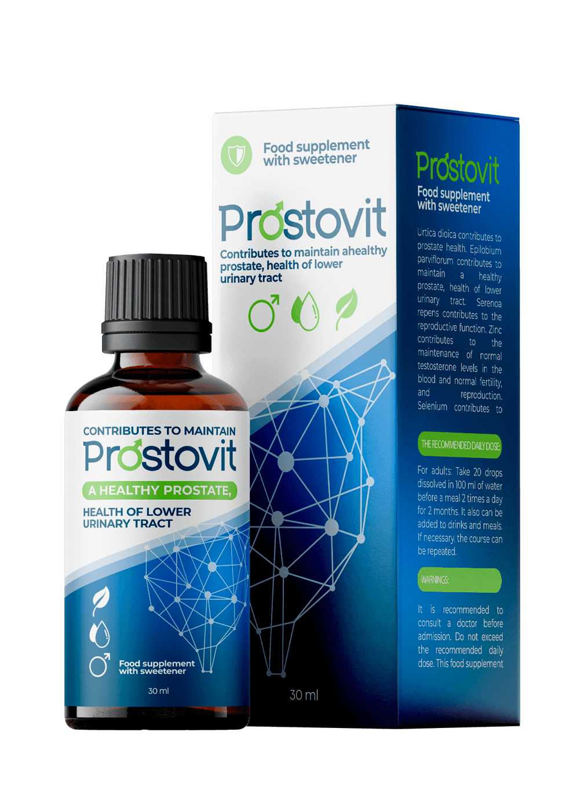

Prostatos ir jnkologijos centro direktorius, Urologijos koledžo Prezidiumo narys, Europoje ir JAV garsus profesorius ir chirurgas. Atlieka šias operacijas: Radikalii prostatektomija naudojant TURP robotą (transuretrinė prostatos rezekcija) prostatai> ir lazerinė abliacija prostatos adenomai.
prostatitas atneša su savimi įvairias problemas žmogui, kaip antai:
● IMPOTENCIJA
● PROSTATINĖ HIPERPLAZIJA
● PROSTATO VĖŽYS

Bloga naujiena yra ta, kad kad 96,7 proc. atvejų prostatitu sergantys vyrai anksčiau ar vėliau pradeda sirgti impotencija.
Prostatos vėžys atsiranda baigiamuosiuose prostatos uždegimo etapuose, kaip bendras rezultatas po to, kai nebuvo gydomas prostatitis. Vyrai, kurie nepaiso prostatitą, iš tiesų rizikuoja savo gyvybe. Jei norite gyventi ilgą ir sveiką gyvenimą, jei norite atitinkamos erekcija ir normalus libido, jums reikia gydyti prostatos uždegimą. Ir tai turi būti padaryta kuo greičiau.
problema yra ta, kad nepaisant to, kad dauguma žmonių, suinteresuotų šią problema, vis tiek neina į gydytoją. Tai todėl, kad kai kurie nelaiko prostatos uždegimą pavojingu reiškiniu, ir žiūri į šią problemą, jei pripažinti ją būtų gėdinga, ir nori ją paslėpti. Kaip rezultatas, dauguma pacientų pamiršta apie ligą be tinkamos priežiūros, o kai jie jau nusprendžia kreiptis pagalbos (jei tai įvyksta), labai dažnai jau buna per vėlai, ir vėžys pradėjo vystytis.
Reikia suprasti, kad prostatitas yra mirtina liga, kuri gali degeneruoti ir sukelti vėžinį naviką. Negydoma ir netinkamai kontroliuojama liga vystosi greitai ir gali sukelti vėžį tik oer 1-2 metus ir dažnai sukelia paciento mirtį.
Bet dabar vyrai turi naują unikalią galimybę užkirsti kelią ir išgydyti prostatos išsiplėtimą ir uždegimą kartą ir visam laikui - net ir be reguliarių apsilankymų klinikoje.
2016 m. rinkoje pasirodė revoliucinis produktas, kuris greitai atstato prostatos funkciją, pašalina uždegimą ir padeda esant prostatitui, net jei jis jau yra lėtinis, bei didina vyrišką jėgą ir lytinio akto trukmę. Šis natūralus produktas vadinamas . Tai patogus ir paprastas produktas, kuris gali būti naudojamas nesvarbu, kur esate, ir jis yra visiškai prieinamas bet kuriam žmogui. Projektas ir bandymai truko dvejus metus, juos atliko JAV gydytojai.
Šiais metais Gydytojų ir chirurgų asociacija sėkmingai baigė naujos kartos produkto klinikinį tyrimą, kuris buvo sukurtas siekiant padėti gydyti prostatitą efektyviausiu būdu. Instituto spaudos tarnyba paskelbė šį pareiškimą:
1. buvo veiksmingas 98 proc. atvejų. Procentai buvo matuojami naudojant standartinį metodą (pasveikusių vyrų skaičius, palyginti su bendru pacientų skaičiumi grupėje iš 100 vyrų, kurie buvo gydomi.
2. 96 proc. atvejų sustabdžius gydymą, visiškai nebuvo stebimi ligos simptomai (procentas, gautas remiantis stebėjimais per šešis mėnesius).
3. Po savaitės vartojant vaistą visi pacientai pastebėjo žymų libido ir vyriškos jėgos padidėjimą.
4. 95 proc. padidėjo lytinio akto trukmė.
5. Nebuvo pastebėta šalutinių efektų ar alerginės reakcijos.

Darbo stažas - 18 metų. Jis yra labai garsusžinomas savo pasaulyje, nes yra geriausias chirurgas šlapimosi sistemos organų operacijų srityje, įskaitant minimaliai invazines.
Urologijos asociacijos, Urologinės onkologijos asociacijos ir Amerikos urologų asociacijos (AAU) narys.
Ilgą laiką mūsų šalyje nebuvo veiksmingų, bet visų pirma prieinamų sprendimų prostatito gydymui, ir tai sukėlė padarinius, kurie yra baisūs. Šia liga susirgo 45 proc. suaugusių gyventojų, o dar blogiau kad 25 proc. jaunuolių. yra revoliucija gydant prostatitą, tikra panacėja. Lašų veiksmingumas buvo išbandytas praktikoje tiek JAV, tiek Europoje. Jų unikali sudėtis ir gyvų ląstelių atradimas padarė nepakeičiamu vaistu kovojant su prostatitu.
Šis produktas buvo išbandytas, ir rezultatai buvo neįtikėtini. Maždaug 98 proc visų pacientų buvo išgydyti, ir liga nėra nebegrįžp. O simptomai dingo visiškai, kaip ir prostatos uždegimas. Atkryčio atvejais, toliau naudojant , simptomai dingo visam laikui.
. Be to, dėl galingų natūralių komponentų komplekso sustiprina vyrišką jėgą ir prailgina lytinio akto trukmę.
yra labai veiksmingas būdas, nes jis išsprendžia problemą kiekviename etape. Jis turi beprecedentį gydomąjį poveikį visai vyrų urogenitalinei sistemai. Kitaip tariant, atlikus šio natūralaus produkto kursą, vyrų kūnas pradeda veikti lygiai taip pat, kaip ir 25-erių metų jaunuolio. Štai kodėl aš absoliučiai rekomenduoju jį visiems vyrams. Net kai nėra prostatito, šio vaisto kursas yra puiki prevencija ir pagalba vyriškai jėgai.
. Be to, su produktu jau atlikti visi testai siekiant gauti svarbiausius sertifikatus. Klinikiniai tyrimai visiškai patvirtino produkto efektyvumą.
Gerbiami vyrai, neignoruokite savo sveikatą Nekaltinkite savęs dėl silpnumo ir nekelkite sau pavojaus! RŪPINKITĖS SAVO SVEIKATA!
Ačiū !